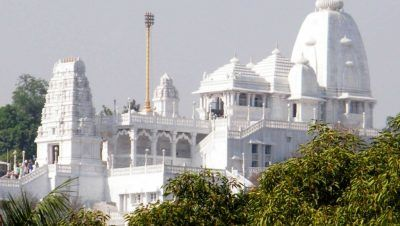
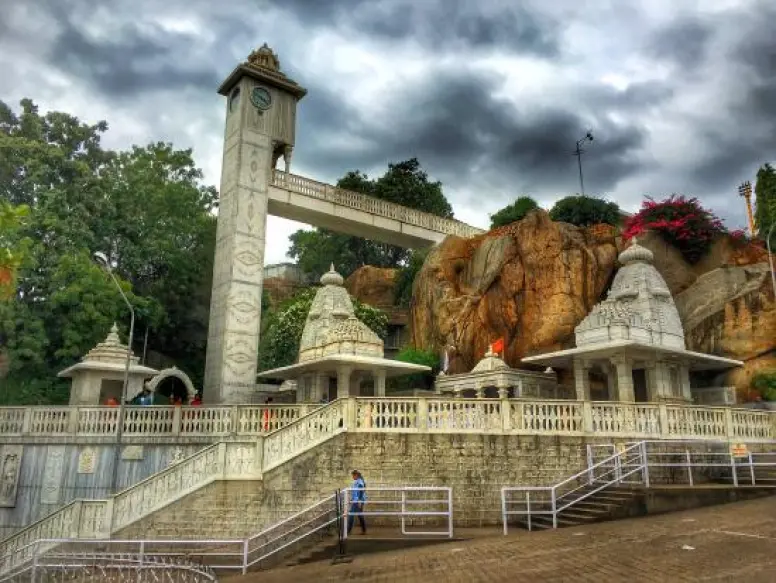

BIRLA MANDIR

Birla Mandir is located towards the southern end of Hussain Sagar Lake in Hyderabad. It situated atop the Kala Pahad which is a twin hillock of Naubat Pahad.
The Birlas built the Hyderabad temple in 1976 and constructed it with white marbles imported from Rajasthan. The hillock is at a height of 280-feet situated on a 13-acre plot.
The construction took almost a decade to complete and was consecrated in the same year by Swami Ranganathananda of Ramakrishna Mission. Birla Foundation, known for constructing other similar temples across the country is the patron of Birla Mandir at Hyderabad too.
The temple is dedicated to Lord Vishnu present in the form of Sri Venkateswara. One can find the kirtanas of Tyagaraja, Annamayya, and Ramadasu reverberating against the backdrop of a blue sky in the morning.
The temple combines the architectural styles of Utkal (Oriya) and South Indian style. The Rajagopuram represents South Indian architectural style while the tower over the main shrine also called the Jagadananda Vimanam represents the Oriyan style. The temple also boasts of finely sculpted marbled images depicting the great epics of Ramayana and Mahabharata. The 42-feet high sanctum sanctorum (garbha gudi) is an impressive replica of the Venkateshwara temple at Tirumala.
The presiding deity is made of granite, 11-feet tall. Swami Venkateswara’s consorts Padmavati and Andal are worshipped in adjoining separate shrines. The Birla Mandir complex also houses a temple dedicated to Buddha along with fresco paintings describing his life. The temple also has separate shrines for other gods such as Shiva, Ganesh, Saraswati, Hanuman, Brahma, Lakshmi and Saibaba.

How to reach:

By Air
The nearest airport is in hyderabad

By Train
The nearest railways is in hyderabad

By Road
birla mandir, the most famous tourist destination in Hyderabad, can be used as a landmark. A bus,cab,local rickshaw can also be taken to reach the capital.